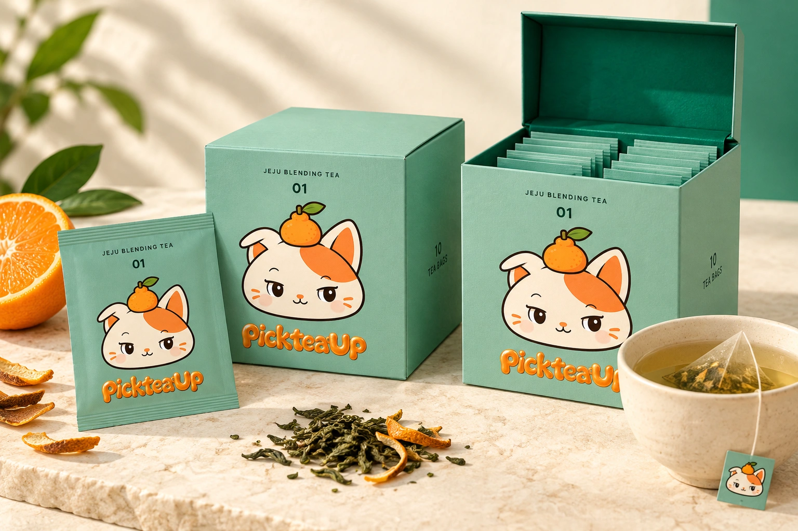
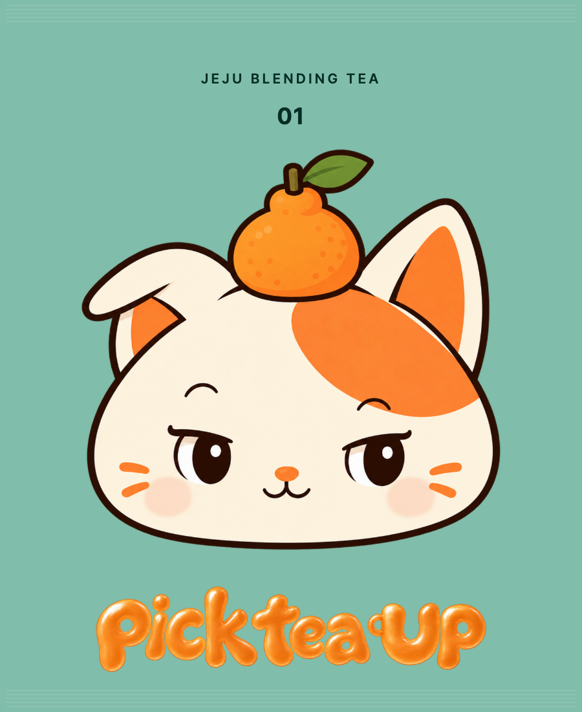
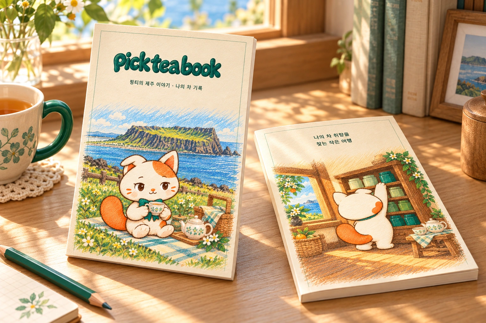

BLEND 01 · 한라봉 · 10 TEA BAGS
귤빛 새벽
감귤 녹차
싱그러운 귤향으로 시작해, 녹차의 산뜻함으로 마무리.

THE TASTE OF YOUR MOMENT
첫 향부터 여운까지
- 첫 향
- 한라봉을 닮은 밝은 감귤향
- 맛
- 가볍고 산뜻한 녹차 맛
- 여운
- 입안에 은은하게 남는 귤향
이런 취향이라면
과일향이 있는 가벼운 차가 좋아요
한라봉 꼭지를 똑 따는 순간, 밝은 향이 퍼지는 제주 아침.
BLEND INGREDIENTS
한 잔을 만드는 원물
- 01제주 녹차
- 02한라봉
- 03감귤피
싱그러운 귤향으로 시작해, 녹차의 산뜻함으로 마무리.

감귤 녹차
YOUR FAVORITE TEA · 픽티업 블렌드 01
곁에 두고 마시는
귤빛 새벽
좋아하는 차를 한 잔씩 간편하게
마음에 든 블렌드를 티백 한 상자로 만나보세요.
ONE BLEND, TEN TEA MOMENTS
귤빛 새벽
한눈에 보기
- 맛
- 귤빛 새벽 · 감귤 녹차
- 블렌드 원물
- 제주 녹차 · 한라봉 · 감귤피
- 구성
- 같은 맛 티백 10개 · 개별 봉투 포장
찻장북도 함께 들어 있나요?
이 상품은 BLEND 01. 귤빛 새벽 티백으로만 구성되어 있어요. 찻장북은 별도로 만나보실 수 있습니다.
다섯 가지 맛이 함께 들어 있나요?
이 상자에는 귤빛 새벽 한 가지 맛의 티백이 10개 들어 있습니다. 다섯 가지 맛을 함께 만나고 싶다면 픽티북 시그니처를 살펴보세요.
티백은 하나씩 포장되어 있나요?
네. 각 티백은 한라봉 핑티가 그려진 개별 봉투에 담깁니다.

YOUR TEA, YOUR STORY
좋았던 한 잔을,
나의 이야기로 남겨요
찻장북에는 핑티의 동화와 차 그림일기,
내가 좋아하는 맛을 모으는 취향 지도가 있어요.